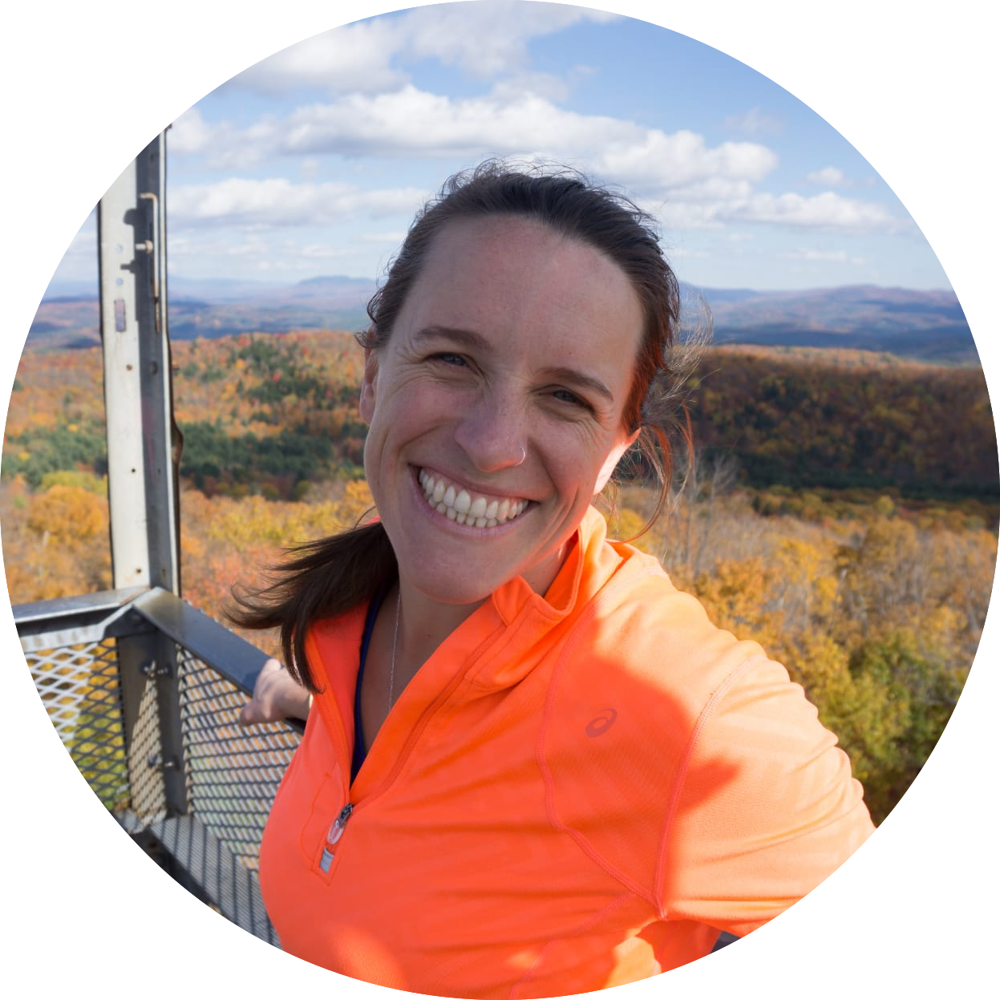
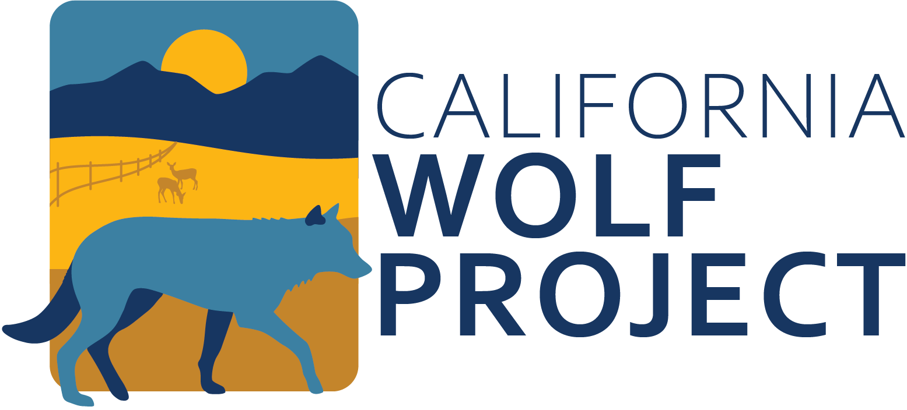
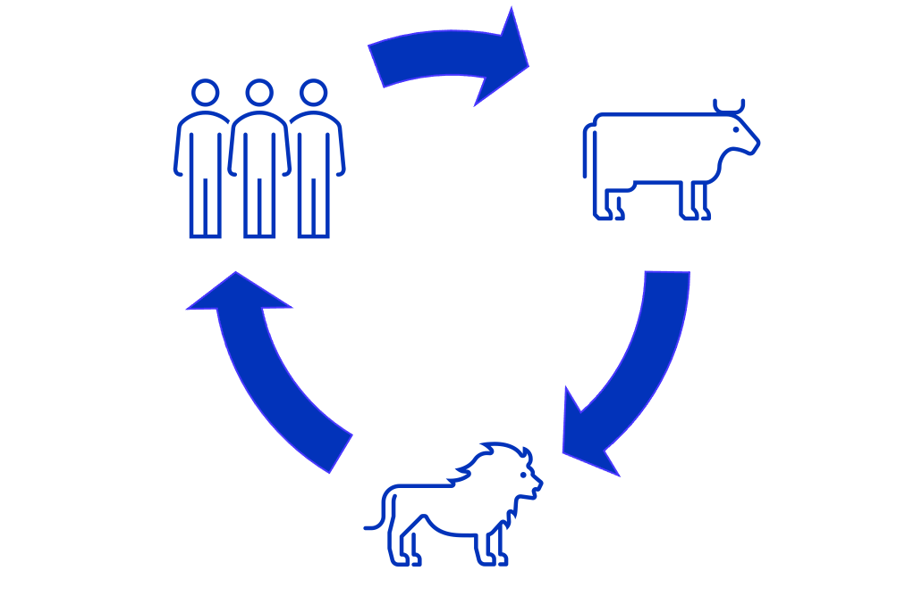
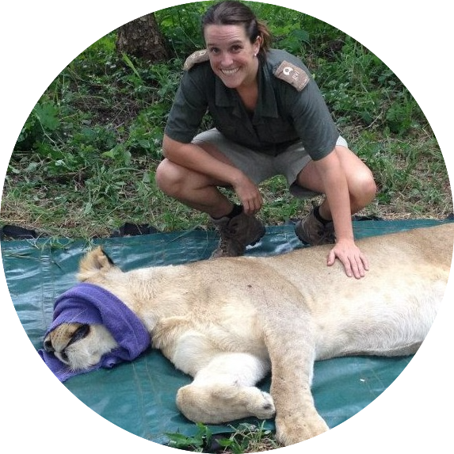
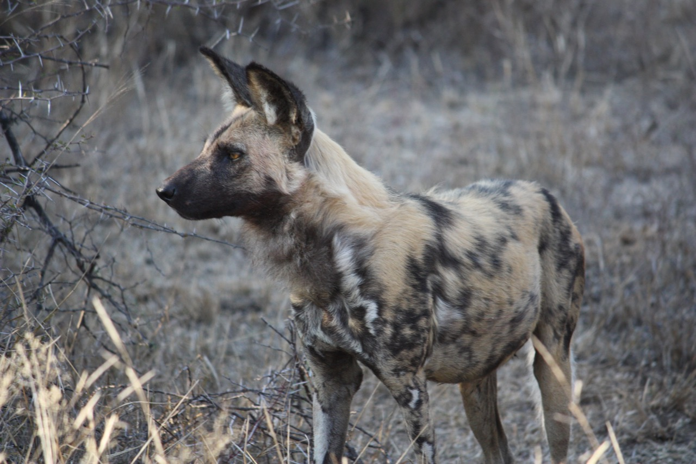
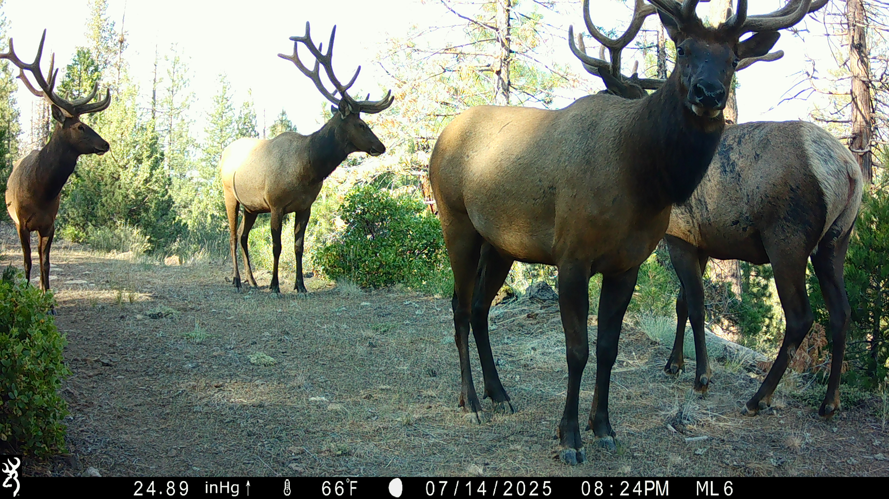

<!DOCTYPE html>
<html lang="en">
  <head><meta http-equiv="Content-Type" content="text/html; charset=UTF-8" />
<meta http-equiv="X-UA-Compatible" content="IE=edge,chrome=1" />


<title>Kaggie Orrick - Conservation Practitioner</title>


  <link rel="shortcut icon" href="/images/favicon.png" type="image/png" />


  <meta name="description" content="Conservation Practitioner"
/>

  <meta name="keywords" content="some, keywords, for, seo, you, know, google, duckduckgo, and, such"
/>
<meta name="referrer" content="no-referrer-when-downgrade" />

<meta name="HandheldFriendly" content="True" />
<meta name="MobileOptimized" content="320" />
<meta name="viewport" content="width=device-width, initial-scale=1.0" />


<link rel="stylesheet" href="/css/style.min.4f758979e927ec11c303b457eddc8846f5758b1a03cb611fef597b97d0cd21f8.css" type="text/css" integrity="sha256-T3WJeekn7BHDA7RX7dyIRvV1ixoDy2Ef71l7l9DNIfg=" />

<meta property="og:url" content="https://kdorrick.github.io/">
  <meta property="og:site_name" content="Kaggie Orrick - Conservation Practitioner">
  <meta property="og:title" content="Kaggie Orrick - Conservation Practitioner">
  <meta property="og:description" content="Conservation Practitioner">
  <meta property="og:locale" content="en">
  <meta property="og:type" content="website">
    <meta property="og:image" content="https://kdorrick.github.io/images/cover-image.jpg">


  <meta name="twitter:card" content="summary_large_image">
  <meta name="twitter:image" content="https://kdorrick.github.io/images/cover-image.jpg">
  <meta name="twitter:title" content="Kaggie Orrick - Conservation Practitioner">
  <meta name="twitter:description" content="Conservation Practitioner">


  <meta itemprop="name" content="Kaggie Orrick - Conservation Practitioner">
  <meta itemprop="description" content="Conservation Practitioner">
  <meta itemprop="image" content="https://kdorrick.github.io/images/cover-image.jpg">

<!DOCTYPE html PUBLIC "-//W3C//DTD HTML 4.01//EN" "http://www.w3.org/TR/html4/strict.dtd">
<html>
<head>
  <meta http-equiv="Content-Type" content="text/html; charset=utf-8">
  <meta http-equiv="Content-Style-Type" content="text/css">
  <title></title>
  <meta name="Generator" content="Cocoa HTML Writer">
  <meta name="CocoaVersion" content="2299.6">
  <style type="text/css">
    p.p1 {margin: 0.0px 0.0px 0.0px 0.0px; font: 12.0px Times; -webkit-text-stroke: #000000}
    span.s1 {font-kerning: none}
  </style>
</head>
<body>
<p class="p1"><span class="s1">  </span></p>
</body>
</html>
</head>
  <body>


  
  <style>
   #site-head.withCenteredImage {
    background-image: url('/images/DSC08052_hu_6c8df19942cd2225.webp');
  } 
  
    @media (max-width:1920px) and (max-height:1282px) {
      #site-head.withCenteredImage { background-image: url('/images/DSC08052_hu_513880af74bae788.webp'); }
    }
    @media (max-width:1600px) and (max-height:1069px) {
      #site-head.withCenteredImage { background-image: url('/images/DSC08052_hu_308571ee2c42ff02.webp'); }
    }
    @media (max-width:1366px) and (max-height:912px) {
      #site-head.withCenteredImage { background-image: url('/images/DSC08052_hu_fcfe9ea5d60cf42f.webp'); }
    }

    
  
    @media (max-height:1024px) and (max-aspect-ratio: 900 / 1024) {
      #site-head.withCenteredImage { background-image: url('/images/DSC08052_hu_7900cde5ebab74aa.webp'); }
    }
    @media (max-height:1024px) and (max-aspect-ratio: 600 / 1024) {
      #site-head.withCenteredImage { background-image: url('/images/DSC08052_hu_a8af2c8af8f5f244.webp'); }
    }
    @media (max-height:1024px) and (max-aspect-ratio: 360 / 1024) {
      #site-head.withCenteredImage { background-image: url('/images/DSC08052_hu_e3e91291d3e63ccc.webp'); }
    }
  </style>
  
<header id="site-head" class="withCenteredImage">


    <div class="vertical">

        

  
  

        <div id="site-head-content" class="inner">
	    

            
              <h1 class="blog-title">Kaggie Orrick</h1>
              <h2 class="blog-description">Conservation </b>Practitioner<b> & Wildlife </b>Researcher<b></h2>
            

            
              
              

              
                
                 <a class='btn site-menu' data-title-anchor='about-me' href='#about-me'>About Me</a>
              
            
              
              

              
                
                 <a class='btn site-menu' data-title-anchor='current-research' href='#current-research'>Current Research</a>
              
            
              
              

              
                
                 <a class='btn site-menu' data-title-anchor='themes' href='#themes'>Themes</a>
              
            
              
              

              
                
                 <a class='btn site-menu' data-title-anchor='my-dissertation' href='#my-dissertation'>My Dissertation</a>
              
            
              
              

              
                
                 <a class='btn site-menu' data-title-anchor='past-research' href='#past-research'>Past Research</a>
              
            
              
              

              
                
                 <a class='btn site-menu' data-title-anchor='publications' href='#publications'>Publications</a>
              
            
              
              

              
                
                 <a class='btn site-menu' data-title-anchor='contact' href='#contact'>Contact</a>
              
            

            
                
                <a id='header-arrow' href="#welcome" aria-label="Go to first section"><i class="fa fa-angle-down"></i></a>
            
        </div>
    </div>
</header>

<main class="content" role="main">
    
    <div class='fixed-nav'>
        
        
        
            
            <a class='fn-item' item_index='1' href='#welcome'>Welcome</a>
            
        
            
            <a class='fn-item' item_index='2' href='#about-me'>About Me</a>
            
        
            
            <a class='fn-item' item_index='3' href='#current-research'>Current Research</a>
            
        
            
            <a class='fn-item' item_index='4' href='#themes'>Themes</a>
            
        
            
            <a class='fn-item' item_index='5' href='#my-dissertation'>My Dissertation</a>
            
        
            
            <a class='fn-item' item_index='6' href='#past-research'>Past Research</a>
            
        
            
            <a class='fn-item' item_index='7' href='#publications'>Publications</a>
            
        
            
            <a class='fn-item' item_index='8' href='#contact'>Contact</a>
            
        
        
            
            <a class='fn-item' item_index='9' href='./#site-head'>Return To Top</a>
        
    </div>

    
    
        
        
        <div class='post-holder'>
            <article id='welcome' class='post first '>
                <header class="post-header">
                    <h2 class="post-title">Welcome</h2>
                </header>
                <section class="post-content">
                    <div style="text-align: justify">
<p></p>
<p>I&rsquo;m Kaggie and I&rsquo;m a conservation scientist. I am currently the Director of the <a href="https://wildlife.berkeley.edu/cawolfproject/">California Wolf Project</a> at University of California, Berkeley with Arthur Middleton and Justin Brashares. I&rsquo;m a PhD graduate of the <a href="https://www.google.com/search?client=safari&amp;rls=en&amp;q=School&#43;of&#43;the&#43;environment&#43;yale&amp;ie=UTF-8&amp;oe=UTF-8">Yale School of the Environment</a> and worked in the <a href="http://schmitz.environment.yale.edu/">Schmitz lab</a> and with the <a href="https://environment.yale.edu/profile/dove">Dove lab</a>. I&rsquo;m also a conservation associate and board member of <a href="https://www.roundriver.org">Round River Conservation Studies</a>. My research examines the human-wildlife interface in social-ecological landscapes. I bridge ecological and social science theories in the hopes to advance our ability to do conservation science. I am particularly interested in the practices of people, animals, and domestic species.</p>
<p>Here to learn more about my dissertation on research I conducted in Botswana? Check out my ArcStory Map I developed! <a href="https://storymaps.arcgis.com/stories/9354e6e7979849aa9ed1dc30ef26cf33">Makgadikgadi: A human-wildlife landscape</a></p>
</div>

                </section>
            </article>
            <div class='post-after light'></div>
        </div>
        
    
        
        
        <div class='post-holder dark'>
            <article id='about-me' class='post  '>
                <header class="post-header">
                    <h2 class="post-title">About Me</h2>
                </header>
                <section class="post-content">
                    <div style="text-align: justify">
<p></p>
<p>I&rsquo;ve worked across a number of different landscapes, including but not limited to: small mammal occurrence along a habitat and elevation gradient on a <a href="https://repository.up.ac.za/handle/2263/57280">geographically-isolated mountain</a>; feeding ecology and energetics of large carnivores, including <a href="https://www.science.org/doi/full/10.1126/science.1256424">cheetah</a>; <a href="https://www.roundriver.org/where-we-work/southern-africa/botswana-okavango-delta/botswana-maps-and-publications/">community-based monitoring of herbivore communities</a> across the the Okavango Delta; human-wildlife interactions near the Central Kalahari desert; and the natural recolonization of <a href="wildlife.berkeley.edu/cawolfproject/">wolves in California</a>.</p>
<h4 id="education">Education</h4>
<li>  B.A., Colby College, 2010 </li> 
<li> M.A., Ecology & Environmental Biology, Columbia University, 2015 </li>
<li> M.Phil., School of the Environment, Yale University, 2020 </li>
<li> Ph.D., School of the Environment, Yale University, 2024  </li>

                </section>
            </article>
            <div class='post-after'></div>
        </div>
        
    
        
        
        <div class='post-holder'>
            <article id='current-research' class='post  '>
                <header class="post-header">
                    <h2 class="post-title">Current Research</h2>
                </header>
                <section class="post-content">
                    <div style="text-align: justify">At the California Wolf Project, we lead efforts to assess wolf impacts on people and sympatric species, collaborate with the California Department of Fish and Wildlife (CDFW), and engage with local ranchers to develop sustainable strategies for coexistence.  As the Director of the project, I oversee all research and partnerships.
<p></p>
<p>Learn more about my work at our website, <a href="https://wildlife.berkeley.edu/cawolfproject/">California Wolf Project</a></p>
<p></p>
<div style="text-align:center">
Photo by Malia Byrtus
                </section>
            </article>
            <div class='post-after light'></div>
        </div>
        
    
        
        
        <div class='post-holder dark'>
            <article id='themes' class='post  '>
                <header class="post-header">
                    <h2 class="post-title">Themes</h2>
                </header>
                <section class="post-content">
                    <div style="text-align: justify">I work at the intersection of social and ecological dimensions in conservation. My research interests cover three overlapping themes, all of which are present in my work. These are:
<li> Theoretical Ecology and Social Science
<li> Applied Social-Ecological Systems
<li> Human-Wildlife Interactions </li>
<br>
<h3 id="theoretical-ecology-and-social-science">Theoretical Ecology and Social Science</h3>
<p>While I am driven and fueled by field-based research and collaboration across multiple stakeholders, I also have a strong interest in ecological and social theory, particularly how we can use theoretical ecological and social science and individual-based modeling to help bridge the gap between theoretical and applied science.</p>
<br>
<h3 id="applied-social-ecological-systems">Applied Social-Ecological Systems</h3>
<p>
Broadly, I am interested in social-ecological systems. Using ecological and anthropological theories and expand them to examine social-ecological landscapes; thus my work spans across qualitative and quantitative disciplines and methodologies. I am focused on the multi-species and multi-predator interactions and space use in a human-dominated (and livestock-dominated) landscape.</p>
<br>
<h3 id="human-wildlife-interactions">Human-Wildlife Interactions</h3>
<p></p>
<p>Inclusively-driven conservation is at the center for my work. In particular, I am interested in how to develop conservation projects which are scientifically rigorous and fit the needs and desires of local communities. Using this approach, I am interested in human-wildlife interactions, which include conflicts.</p>

                </section>
            </article>
            <div class='post-after'></div>
        </div>
        
    
        
        
        <div class='post-holder'>
            <article id='my-dissertation' class='post  '>
                <header class="post-header">
                    <h2 class="post-title">My Dissertation</h2>
                </header>
                <section class="post-content">
                    <p>The research for my dissertation aimed to understand the interplay between wildlife, cattle, and humans and map its resulting coexistence landscape in Central Sub-district of Boteti West between Makgadikgadi Pans National Park (MPNP) and the Central Kalahari Game Reserve (CKGR), Botswana. The area is predicted to be the highest priority corridor for lions in all of the Kavango-Zambezi Transfrontier Area, as well as one of the highest human-wildlife conflict areas in the country. However, there has never been a wildlife survey to confirm the use of this area as a corridor or determine how, when, or where wildlife move through this human-dominated landscape. Specifically, I am interested in the practices of people, of wildlife, and of livestock.</p>
<p>I examine the landscape using three methodologies:</p>
<p></p>
<ol>
<li>Habitat suitability and wildlife occurrence using a combination of camera trap surveys and satellite imagery;</li>
<li>Human perceptions of wildlife using household surveys and participatory mapping to understand human land use patterns;</li>
<li>Cattle movement and land use through GPS units.
<br></li>
</ol>
<p>This information collectively portrays an inclusive, social-ecological system that can provide nuanced understanding of how to achieve human-cattle-wildlife coexistence while incorporating participation from local communities in CT8. This work was in partnership and collaboration with the tourism organization <a href="https://naturalselection.travel/?gclid=CjwKCAiA0JKfBhBIEiwAPhZXDwErBEMzmnYx-DHIhrq58rIoKVPGtQFYrdRpYFubaGJNOAl2tZS0bxoCM44QAvD_BwE">Natural Selection</a>, the conservation NGO <a href="roundriver.org">Round River Conservation Studies</a>, and the <a href="https://www.ori.ub.bw/">University of Botswana&rsquo;s Okavango Research Institute</a>.
<br>

<br>
You can check out more of my work through our ArcStory Maps project entitled <a href="https://storymaps.arcgis.com/stories/9354e6e7979849aa9ed1dc30ef26cf33">Makgadikgadi: A human-wildlife landscape</a></p>

                </section>
            </article>
            <div class='post-after light'></div>
        </div>
        
    
        
        
        <div class='post-holder dark'>
            <article id='past-research' class='post  '>
                <header class="post-header">
                    <h2 class="post-title">Past Research</h2>
                </header>
                <section class="post-content">
                    <p>I have been so fortunate to work in many places.</p>
<p></p>
<div style="text-align: justify">Upon completion of my undergraduate degree in Maine, I spent three years in South Africa working on a private game reserve, conducting large carnivore research as well as managing a small mammal satellite research camp on a geographically-isolated mountain range. When I left in 2015 I had gone from intern to the project manager.
<p></p>
<p>I received a MA in Conservation Biology at Columbia University in 2015 with a thesis focused on anthropogenic features that influence elephant movement. During that time I also developed my spatial analysis skills and love for Geographic Information Systems and remote sensing. I was also a graduate student researcher for Professor Don Melnick conducting preliminary analysis of forest loss using remote sensing and GIS for the Rainforest Standard, a carbon credit program, to determine appropriate protected areas for forest loss evaluation.</p>
<p>Since graduating from Columbia University, I have been affiliated with Round River Conservation Studies&rsquo;s work in Botswana.

From 2015-2018 I managed and led the RRCS US-student abroad program and the development of community-based wildlife monitoring project. This work included herbivore and bird monitoring, community escort guide training and assisting with the Northern Botswana Ecological Assessment and Decision Support Tool. I simultaneously ran the research program while also working with 5 – 9 American undergraduates as part of their abroad program with RRCS. We lived in tents in the field for three months at a time while working with community members, teaching five college-level courses, conducting research and cooking over an open fire.</p>
<p>From 2018-2024, I was responsible for the design and implementation of research and conservation efforts of RRCS in the Makgadikgadi region of Botswana. I maintained partnerships with the University of Botswana’s Okavango Research Institute and Department of Wildlife and National Parks, assisted with grant applications, while also being the main project coordinator on the ground. Much of my work and my motivation comes from the experiences and knowledge I gained in Botswana.</p>
</div>
<p></p>
<p>From 2024 to present I have been working at UC Berkeley as part of the California Wolf Project. We examine the social and ecological dimensions of the natural wolf recovery occurring right now in California. This includes studying the impact of wolves on simpatric species, livestock producers, and general wolf ecology across this unique state. We work in close partnership and collaboration with California Department of Fish and Wildlife.</p>

                </section>
            </article>
            <div class='post-after'></div>
        </div>
        
    
        
        
        <div class='post-holder'>
            <article id='publications' class='post  '>
                <header class="post-header">
                    <h2 class="post-title">Publications</h2>
                </header>
                <section class="post-content">
                    <div style="text-align: justify">
<p>Espinosa Schatz, C., Meier, K., <strong>Orrick, K.</strong>,  Dove, M. 2025. &ldquo;Marginal Ecologies: A framework for studying the social-ecological margins&rdquo;.   Environmental Research Letters. DOI:10.1088/1748-9326/add35f <a href="https://iopscience.iop.org/article/10.1088/1748-9326/add35f">Link here</a></p>
<p>Kanoi, L., Burow, P., Gao, Y., Lim, A., <strong>Orrick, K.</strong>, Singer, E., Dove, M. 2025. &ldquo;Re-constructing Restoration: A Critical Review of the Practice, Politics, and Process of Restoration in Diverse Ecologies&rdquo;. Environment and Society: Advances in Research. DOI: 10.3167/ares.2024.150102 <a href="https://doi.org/10.3167/ares.2024.150102">Link here</a></p>
<p>Feldmeier, D.E., Schmitz, O.J., Carter, N.H.,  Masunga, G.S., <strong>Orrick, K.</strong> 2024.	&ldquo;Predictions and Perceptions: A social-ecological analysis of human-carnivore conflict in Botswana&rdquo;. Biological Conservation.</p>
<p><strong>Orrick, K.</strong>, Ferraro, K., Sommer, N.	2024. &ldquo;Individuals in focus: Individuals as the ecological and ethical center of human-wildlife&rdquo;. Biological Conservation.</p>
<p><strong>Orrick, K.</strong>, Sommer, N., Rowland, F., Ferraro, K. 2024.	&ldquo;Predator–prey interactions across hunting mode, spatial domain size, and habitat complexities&rdquo;. Ecology. DOI: 10.1002/ecy.4316 <a href="http://doi.org/10.1002/ecy.4316">Link here</a></p>
<p>Burak, M.*; Ferraro, K. *; <strong>Orrick, K.</strong> *; Sommer, N.; Ellis Soto, D.; Schmitz, O. 2024. &ldquo;Context matters when rewilding for climate change&rdquo;. People and Nature. *indicates first-author. DOI: 10.1002/pan3.10609. <a href="http://doi.org/10.1002/pan3.10609">Link here</a></p>
<p><strong>Orrick, K.</strong>, Dove. M., Schmitz, O. 2024. &ldquo;Human-nature relationships: An introduction to social-ecological practice theory for human-wildlife interactions&rdquo;. Ambio.  DOI: 10.1007/s13280-023-01945-x. Epub ahead of print. PMID: 37837503. <a href="https://link.springer.com/article/10.1007/s13280-023-01945-x">Link here</a></p>
<p>Gao, Y., Wang, Y.,  Lee, A.T.L.,  Liu, Y., Luo, Y., <strong>Orrick, K.</strong>, Alexander, J.S., Sangpo, J.T., Clark, S.G. 2023. &ldquo;Contextualizing sociodemographic differences in Tibetan attitudes toward large carnivores&rdquo;. Conservation Science and Practice. DOI:10.1111/csp2.13049. <a href="https://conbio.onlinelibrary.wiley.com/doi/epdf/10.1111/csp2.13049">Link here</a></p>
<p>Zhou, W.  <strong>Orrick, K.</strong>  and Lim, A. and Dove, M.. 2022. “Reframing Conservation and Development Perspectives on Bushmeat.” Environmental Research Letters. DOI: 10.1088/1748-9326/ac3db1. <a href="http://iopscience.iop.org/article/10.1088/1748-9326/ac3db1.">Link here</a></p>
<p><strong>Orrick, K.</strong> “Range Size and Drivers of African Elephant (Loxodonta africana) Space Use on Karongwe Private Game Reserve, South Africa.” African Journal of Ecology 56, no. 3 (September 2018): 572–81.  <a href="https://doi.org/10.1111/aje.12500.">Link here</a>
<br><br></p>
<p></p>
<p><br><br></p>
<p><span style="font-size: 35px; font-weight: bold;">Reports</span></p>
<p>Middleton, A., Brashares, J., Rodriguez Curras, M., Hyde, M., <strong>Orrick, K.</strong>, Winters, C., Byrtus, M. 2024. Science to Support California Wolf Recovery: California Wolf Project 2024 Annual Report. <a href="https://wildlife.berkeley.edu/cawolfproject/wp-content/uploads/2025/01/CAWP-2024-Annual-Report-FINAL.pdf">Link here</a></p>
<p><strong>Orrick, K.</strong>, Heinemeyer, K., Masunga, G.S., Triska, M. 2021. Community-based Wildlife Monitoring in Selected Concessions of the Okavango Delta, 2013 - 2019.</p>
<p>Heinemeyer, K., Masunga, G.S. <strong>Orrick, K.</strong>, Smith, J., Sinvula, M., Dain-Owens, S. (2016). Community-based wildlife monitoring in selected concessions of Chobe and the Okavango Delta, 2013-2015.</p>
<p>Colby Environmental Assessment Team, Colby College and Problems in Environmental Science course (Biology 493), Colby College. (2009). &ldquo;A Watershed Analysis of Salmon Lake and McGrath Pond: Implications for Water Quality And Land Use Management&rdquo;. Colby College Watershed Study: Salmon Lake and McGrath Pond (2009, 1993). 1. <a href="https://digitalcommons.colby.edu/salmonmcgrath/1.">Link here</a></div></p>

                </section>
            </article>
            <div class='post-after light'></div>
        </div>
        
    
        
        
        <div class='post-holder dark'>
            <article id='contact' class='post  last'>
                <header class="post-header">
                    <h2 class="post-title">Contact</h2>
                </header>
                <section class="post-content">
                    <p><a href="/images/KO_CV_May_2025.pdf">CV</a></p>
<p>
  

 <a href="mailto:kaggie.orrick@gmail.com">kaggie.orrick@gmail.com</a></p>

                </section>
            </article>
            <div class='post-after'></div>
        </div>
        
    
</main>


<footer class="site-footer">
  <div class="inner">
    

    

    
      <section class="copyright">© Kaggie Orrick</section>
    

    
      <section>
        <a href="https://themes.gohugo.io/hugo-scroll/" target="_blank" rel="noopener">Hugo Scroll</a> template
      </section>
    

    
  </div>
</footer>


    

    
    
    
    

    <script src="/js/script.min.e0e987346bbbb9dba86d3972fa7b7f9edbad23c49a5b4e270eb8531b3299c1cc.js" integrity="sha256-4OmHNGu7uduobTly&#43;nt/ntutI8SaW04nDrhTGzKZwcw=" ></script>

    
    <script>cssVars();</script>

    
</body>
</html>
